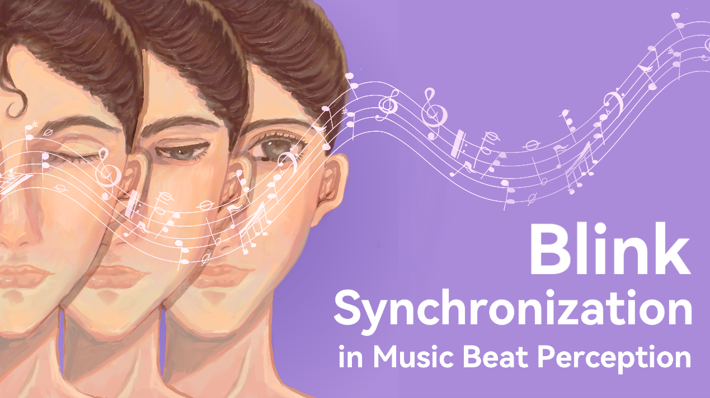
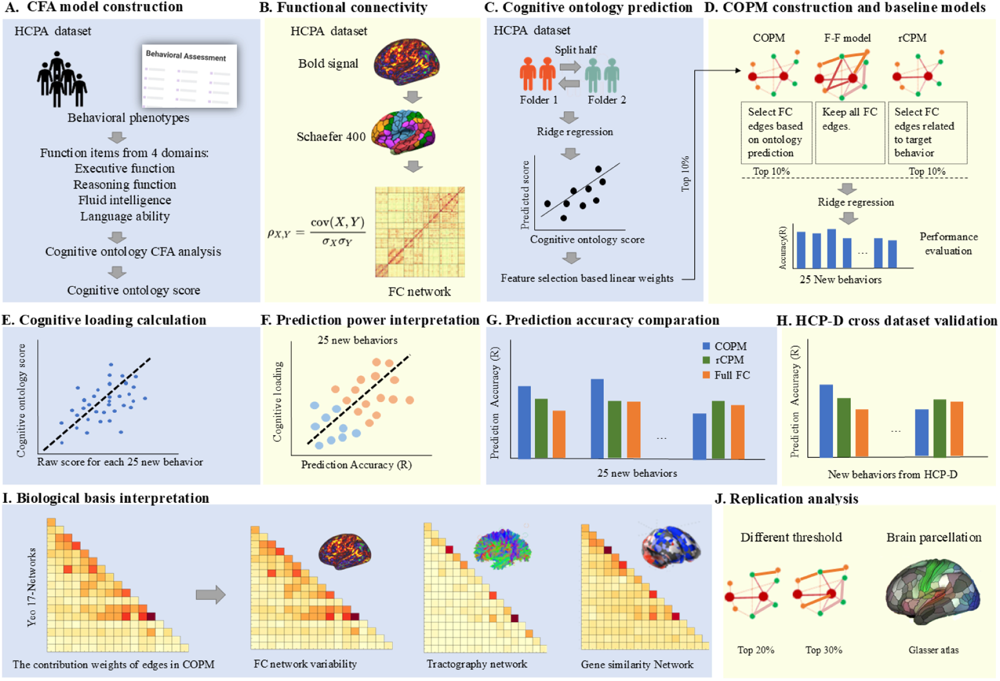
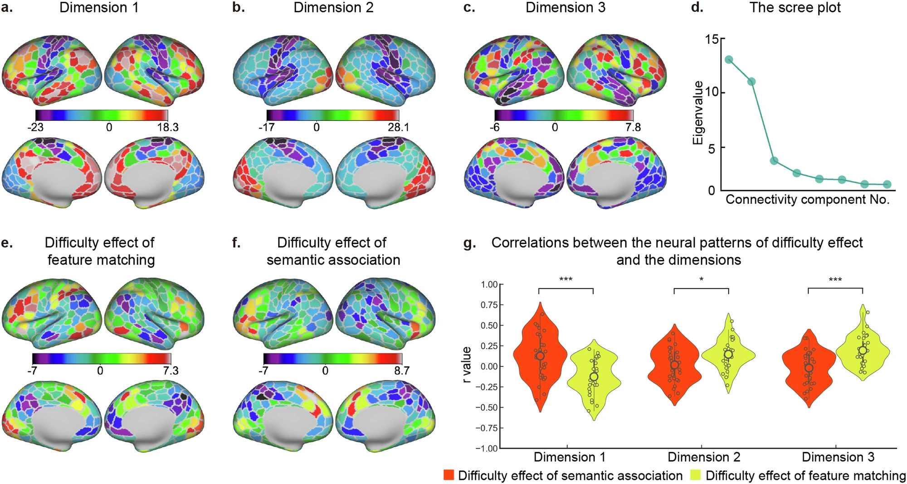
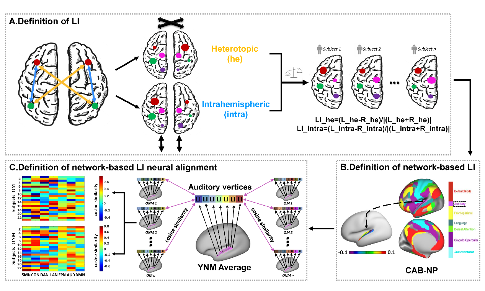

Our new study focused on area 55b has been posted as a preprint.

Phd Student Wu Yiyang Published a paper in PLoS Biology

Phd Student Wu Guowei Published a paper in Neuroimage

Assistant Research Professor Wang Xiuyi Published a paper in Communications Biology

Post Doc Jin Xinhu Published a paper in Neuroscience Bulletin
Explore LASM Lab
Quick paths through our work
Each row opens a dedicated page and pairs a visual snapshot with the key information you can expect to find there.
Research
Music, speech, brain imaging and neural modulation
- Connects auditory cognition with speech perception, music cognition and multisensory integration.
- Uses fMRI, MEG, EEG, psychophysics and non-invasive stimulation to probe brain mechanisms.
- Highlights supported programs and the lab's broader research roadmap.
PI
Professor Du Yi（杜忆）
- Research Professor at the Institute of Psychology, Chinese Academy of Sciences.
- Studies auditory speech and music cognition across perception, development and plasticity.
- Combines psychophysics, fMRI, MEG, EEG, tES and TMS methods.


Team
A collaborative group spanning speech, music and neuroscience
- Meet assistant research fellows, postdoctoral fellows and graduate students.
- Browse member interests from semantic networks to music reward and audiovisual integration.
- Includes current members and graduates in a photo-rich gallery.
Publications
Selected papers
- Review recent work in speech perception and language comprehension.
- Explore publications on musical processing, training plasticity and brain topography.
- Find animal-model studies and links to highlighted articles.
Contact Us
Find the lab and connect with LASM
- See contact information for the Institute of Psychology, Chinese Academy of Sciences.
- Use the page as the entry point for visits, applications and collaboration inquiries.
- Reach the lab directly from the shared navigation on every page.
Copyright 2024 All Rights Reserved
Template by WebThemez.com